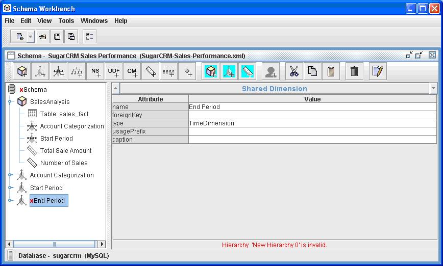
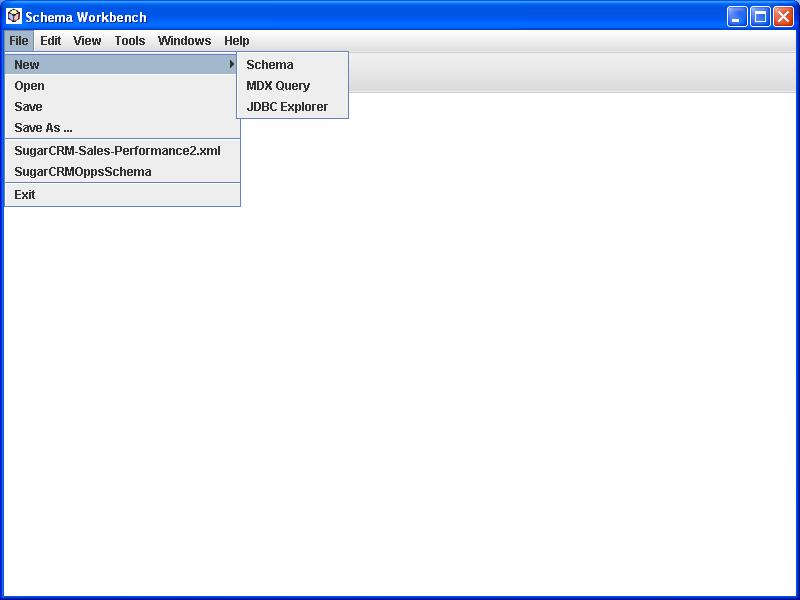
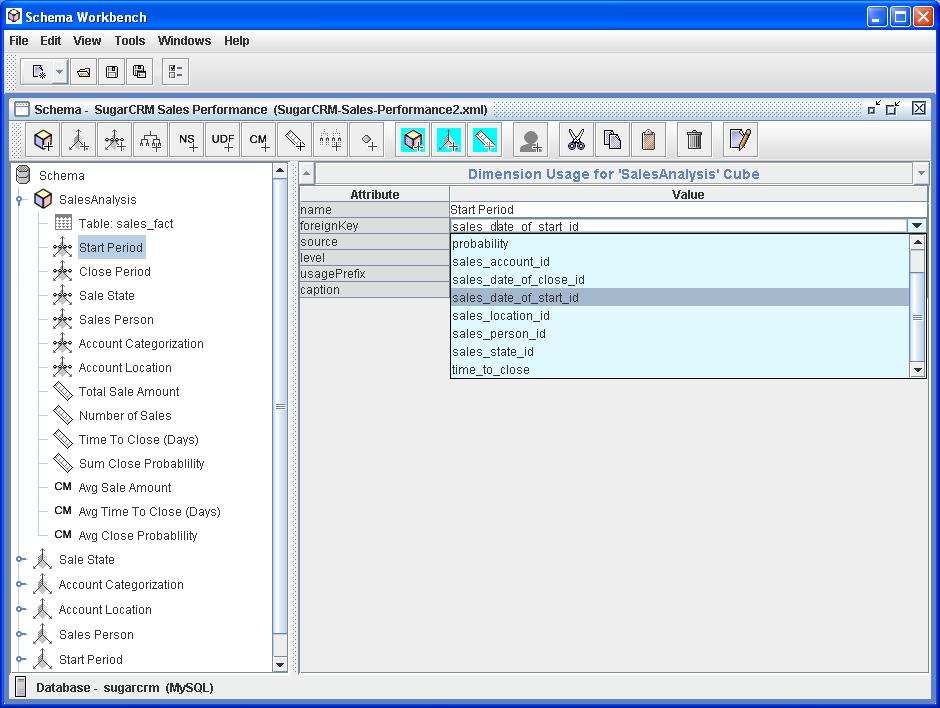
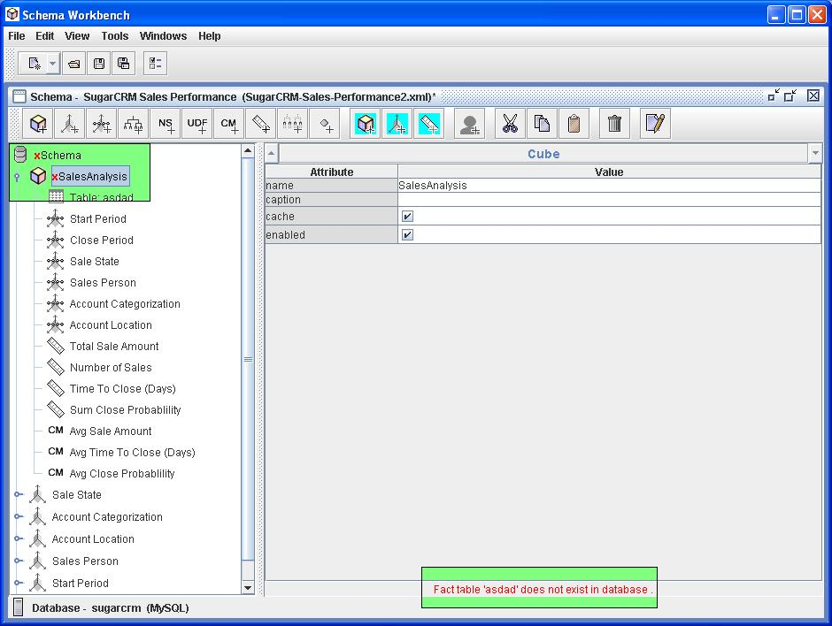
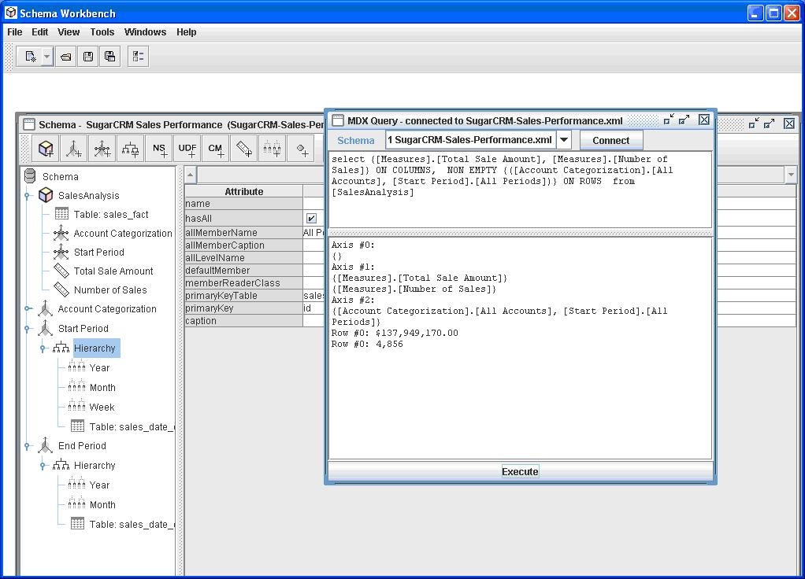

The Mondrian Schema Workbench is a designer interface that allows you to create and test Mondrian OLAP cube schemas visually. The Mondrian engine processes MDX requests with the ROLAP (Relational OLAP) schemas. These schema files are XML metadata models that are created in a specific structure used by the Mondrian engine. These XML models can be considered cube-like structures which utilize existing FACT and DIMENSION tables found in your RDBMS. It does not require that an actual physical cube is built or maintained; only that the metadata model is created.
Note: For documentation on publishing Mondrian Schemas to Pentaho's BI Platform, see Publishing an Analysis Schema Using the Schema Workbench 
It provides the following functionality:
A more detailed manual is Schema Workbench Manual
|
To build and create the workbench jar, at the command line, type: ant workbench Example output: Buildfile: build.xmlOverriding previous definition of reference to jdk version: prepare: parser: [javacup] Files are up to date. generate.resources: [resgen] C:\MONDRIAN_SourceForge\open\mondrian\src\main\mondrian\resource\MondrianResource.java is up to date [resgen] C:\MONDRIAN_SourceForge\open\mondrian\classes\mondrian\resource\MondrianResource.properties is up to date [resgen] C:\MONDRIAN_SourceForge\open\mondrian\src\main\mondrian\resource\MondrianResource_en_US.java is up to date [resgen] C:\MONDRIAN_SourceForge\open\mondrian\classes\mondrian\resource\MondrianResource_en_US.properties is up to date [resgen] C:\MONDRIAN_SourceForge\open\mondrian\src\main\mondrian\resource\MondrianResource_de_DE.java is up to date [resgen] C:\MONDRIAN_SourceForge\open\mondrian\classes\mondrian\resource\MondrianResource_de_DE.properties is up to date [resgen] C:\MONDRIAN_SourceForge\open\mondrian\src\main\mondrian\resource\MondrianResource_de.java is up to date [resgen] C:\MONDRIAN_SourceForge\open\mondrian\classes\mondrian\resource\MondrianResource_de.properties is up to date [resgen] C:\MONDRIAN_SourceForge\open\mondrian\src\main\mondrian\resource\MondrianResource_es_ES.java is up to date [resgen] C:\MONDRIAN_SourceForge\open\mondrian\classes\mondrian\resource\MondrianResource_es_ES.properties is up to date def: compile.java: compile: info: [echo] ============================================================== [echo] | Mondrian configuration info | [echo] ============================================================== [echo] project.location = C:\MONDRIAN_SourceForge\open\mondrian [echo] jdk.home = C:\Program Files\Java\jdk1.5.0_05 [echo] catalina.home = C:\apache-tomcat-5.5.12 [echo] junit.home = C:\junit4.0 [echo] mondrian.foodmart.catalogURL = file:C:\MONDRIAN_SourceForge\open\mondrian/demo/FoodMart.xml [echo] mondrian.foodmart.jdbcURL = jdbc:odbc:MondrianFoodMart [echo] mondrian.jdbcDrivers = sun.jdbc.odbc.JdbcOdbcDriver [echo] ============================================================== compile.tests: jar: [jar] Building jar: C:\MONDRIAN_SourceForge\open\mondrian\lib\mondrian.jar workbench: [jar] Building jar: C:\MONDRIAN_SourceForge\open\mondrian\lib\workbench.jar BUILD SUCCESSFUL Total time: 47 seconds This will create To start the workbench., at the command prompt, type In Windows: ant workbench-run In UNIX/Linux: java -jar lib/workbench.jar |
|
Set properties for
connection to your cube database via
These preferences and the last 4 schemas edited are kept in a "workbench.properties" file in the root of the classpath. If you change the connection properties, you will need to close/save the existing schema editor(s) and restart to see the effects. |
|
Create a new schema or open an existing one. If you open an existing schema, the Workbench validates that the tables and columns underlying the cube definitions actually exist in the database.  |
|
Create or edit elements in the schema. The Workbench validates your changes against the cube database tables and column names.  The Workbench validates edits against the Mondrian schema DTD.  |
|
Save your schema and run some MDX queries to test. Error messages and results are displayed.  |
Author: Sherman Wood, JasperSoft; last modified April 2007.
Version: $Id$
(log)
Copyright (C) 2007-2007 JasperSoft
Copyright (C) 2007-2009 Pentaho and others
{kind=link}
{kind=link}